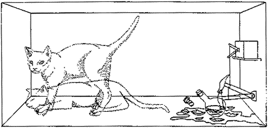
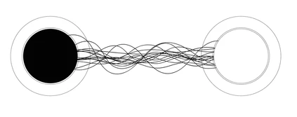
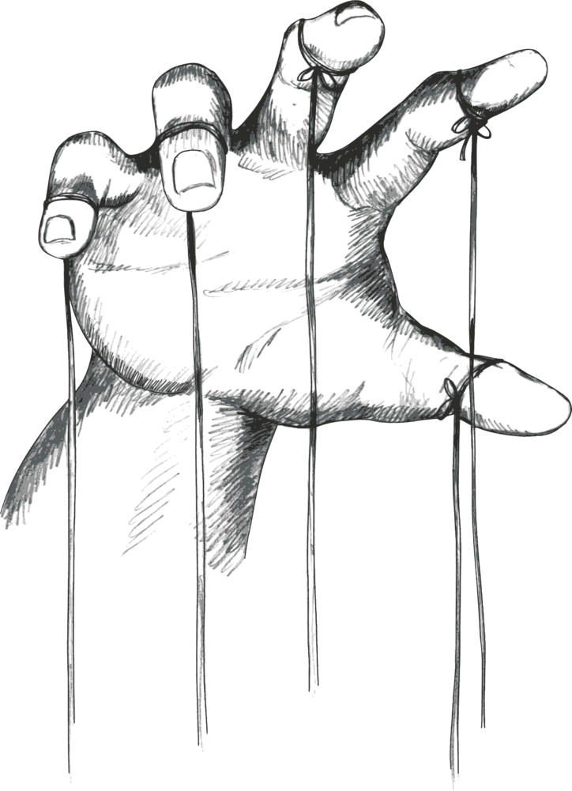
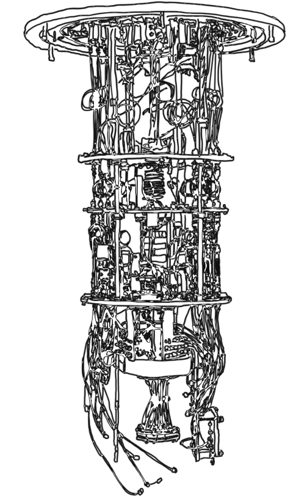
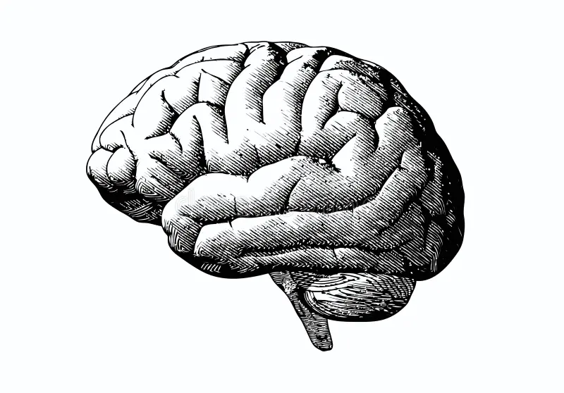
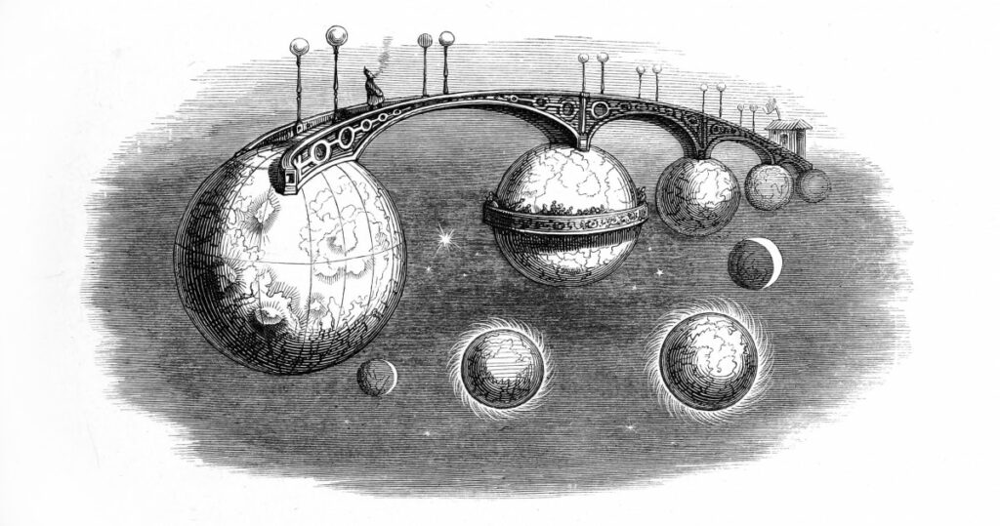

What If Reality Isn't Real?
Quantum Weirdness vs. Human Philosophy
By Ryan Weed
What if reality isn't as solid as we think? Quantum physics suggests the universe plays by strange rules, and those rules might just force us to rethink everything we thought we knew about reality, ethics, choice, and what it means to 'be'.
Reality Might Be on a Dimmer Switch
What if reality isn't something solid and definite, but something that waits on you to happen? This isn't metaphor. It's quantum mechanics. At the microscopic scale, particles don't settle into one state until they're observed. Until then, they hover in a haze of overlapping possibilities: a "both/and" existence that breaks with classical logic. Imagine holding a decision in your mind, like whether to text your ex or go to sleep. For a moment, both futures seem real. In quantum terms, that's not just a feeling. It's a model. And if observation plays a role in determining outcomes, then the idea of a reality existing independently of observers starts to crack. As Fields (2024) puts it, "the notion of an objective quantum state independent of observation becomes increasingly difficult to defend." Are we discovering the world as it is, or calling it into being by looking? Quantum theory doesn't offer easy answers. But it demands we ask whether reality can exist at all without someone there to witness it.

You Think, Therefore... You Entangle?
Quantum entanglement may sound like science fiction, but it's an experimentally verified fact. Two particles can become so deeply linked that a change in one immediately affects the other, no matter how far apart they are, even across galaxies. Imagine thinking about someone, and their coffee spills in another city. It's not just strange. It undermines our basic assumptions about space, time, and causality. If a measurement here can influence an outcome there, what does that say about the idea of separateness? Or the boundaries of knowledge? As Cuffaro (2021) argues, entanglement challenges "the classical conception of physical systems as possessing their own states independently of each other." In other words, the quantum world doesn't just suggest interconnectedness. It forces us to question whether independence, as we usually conceive it, is even possible. Maybe we're not as isolated as our everyday experience makes us feel. Quantum theory gives us reason to think again.

Free Will: Chaos or Choice?
If quantum mechanics introduces real randomness into the fabric of the universe, does that mean we're no longer bound by determinism? It's tempting to say yes. But randomness alone doesn't equal freedom. A dice roll isn't a decision, and unpredictability isn't the same as agency. Still, quantum theory creates space for something more than strict causal chains. If our brains operate, at least in part, within quantum systems, then our choices might not be entirely pre-scripted by prior states. As Sheikh (2024) notes, "quantum indeterminacy may offer a foothold for genuine spontaneity, though not necessarily for responsibility." Just as Sheikh put it, we've been pushed to reconsider what freedom really requires. Maybe we aren't puppets, but we're not entirely self-made agents either. The quantum world doesn't hand us freedom on a platter, it dares us to redefine what choosing even means.

The Ethics of Uncontainable Power
Quantum computing isn't just a leap in processing power. It's a leap in what it means to act, to decide, and to control. The same technologies that might unravel the encryption behind our financial systems and private communications also unravel something deeper: our sense of security, autonomy, and ethical preparedness. The algorithms we rely on to safeguard trust in a digital society weren't designed for a quantum world. And yet that world is rapidly arriving. Possati (2023) points out that "quantum technologies risk outpacing the ethical and legal frameworks meant to contain them," raising the unsettling possibility that we're creating systems we don't yet know how to govern (which we've already experienced with the recent AI boom). This isn't just about cybersecurity, it's about moral foresight, who gets to wield quantum power, who gets protected, and who gets exposed. At its core, the rise of quantum computing forces us to ask whether ethics can evolve as quickly as our machines, or whether we're stumbling into a future where the tools are more advanced than the hands that guide them.

The Quantum Self
What if consciousness isn't just a byproduct of neurons firing, but something rooted in the quantum structure of reality itself? Some philosophers and researchers argue that classical physics can't fully explain the phenomenon of subjective experience. The unity of awareness, the immediacy of thought, the irreducible "now" of being, all resist easy reduction to brain chemistry. The bold hypothesis is that consciousness might emerge from quantum processes within the brain, entangling the self with something deeper than biology. Fields (2024) says that "standard neuroscience may be insufficient to account for conscious awareness if quantum effects are functionally significant in cognition." If that's true, then we are not merely physical organisms. We are participants in a universe where mind and matter are entangled, where identity may not be fixed, but fluctuating, contextual, even non-local. In this view, to be conscious is not just to think, but to resonate with the very structure of possibility.

East Meets Entanglement
It's tempting to think of quantum physics as the cutting edge of modern science, but in some ways, it echoes metaphysical ideas that are thousands of years old. Advaita Vedanta, a school of Indian philosophy, holds that all distinctions are ultimately illusions. The self, the world, even time and space, are expressions of one undivided reality. That might sound poetic, but quantum entanglement adds scientific teeth to the claim. When particles become entangled, they stop being fully separate, no matter how far apart they are. Their properties become relational, not individual. Verma (2024) writes that "the non-dualistic metaphysics of Advaita finds an uncanny resonance in quantum theory's rejection of separability." If that's more than a coincidence, it suggests our scientific models are circling back to ideas long embedded in spiritual traditions. Maybe what we call quantum weirdness isn't weird at all. Maybe it's a rediscovery of something older than physics: the fundamental oneness that underlies everything we think is divided.
Where Do We Go from Here?
Quantum physics and computing don't just challenge our scientific models, they disrupt the very fabric of meaning itself. They force us to reconsider what's real, what's knowable, and even who we are in this vast, uncertain universe. As our technological capabilities expand and our theories become more abstract, we find ourselves standing at the edge of a new frontier. One where science and philosophy converge. This is no longer just about particles or probabilities; it's about understanding the nature of existence itself. And as we step into this unknown, the real question becomes: Are we ready to face a world that defies the very concepts we've always used to understand it?
